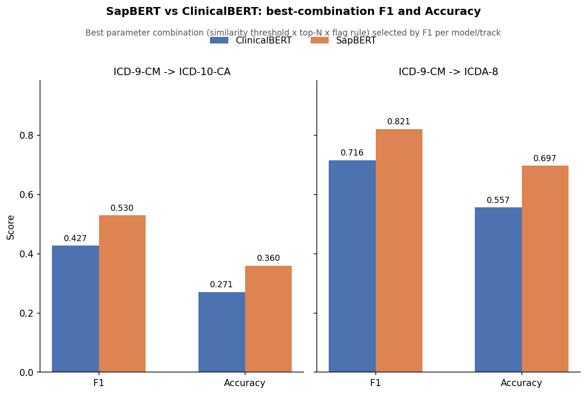
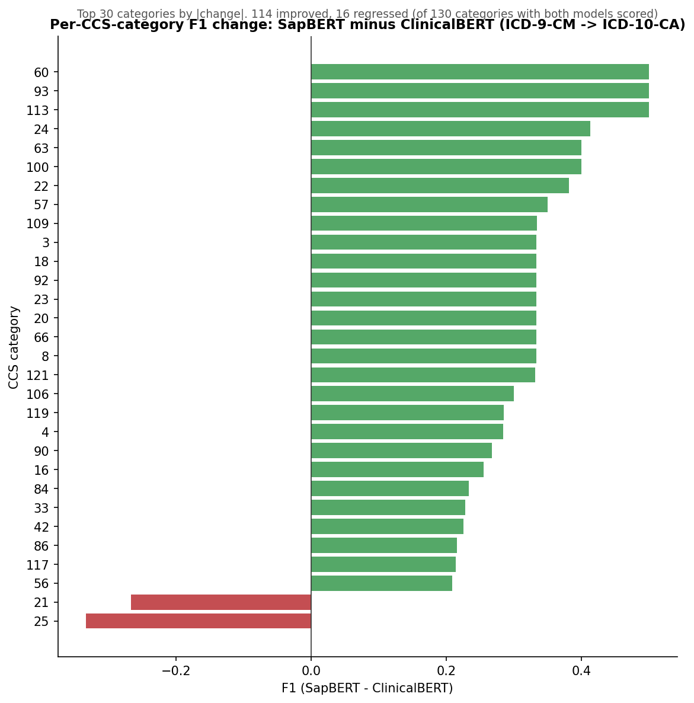
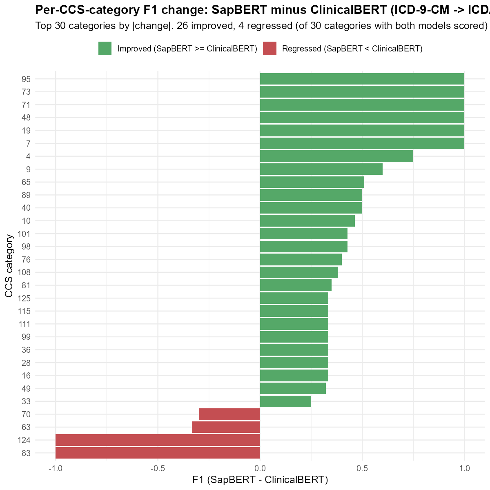

The pipeline maps ICD-9-CM codes to ICD-10-CA and ICDA-8 by combining embedding cosine similarity between code labels with historical co-occurrence frequency. A rule-based flag combination picks the final mapping, validated against a manual crosswalk for precision, recall, F1, and accuracy, overall and per CCS category.
This report compares two embedding models for the similarity signal:
ClinicalBERT (the original) and SapBERT
(cambridgeltl/SapBERT-from-PubMedBERT-fulltext). Everything
downstream of the embeddings stays the same between the two runs, so any
difference in the metrics comes from the embedding model itself.
scripts/01_generate_sapbert_embeddings.R).scripts/pipeline_lib.R): chapter-distance filtering,
similarity threshold cutoff, top-N co-occurrence selection, one of four
flag-combination rules, and validation against the manual crosswalk.Correctness check. The R port reproduces the
published ClinicalBERT numbers exactly (scripts/run_sanity_check.R:
ICD-9->ICD-10-CA P0.686/R0.277/F1 0.395/Acc 0.246; ICD-9->ICDA-8
P0.753/R0.680/F1 0.715/Acc 0.556, both at threshold 0.995). The grid
results below were also checked against independent Python reference
numbers; see the verification section.
| Track | Model | Similarity threshold | Top-N co-occurrence | Flag rule | Precision | Recall | F1 | Accuracy |
|---|---|---|---|---|---|---|---|---|
| ICD-9-CM -> ICD-10-CA | ClinicalBERT | 0.995 | 30 | 4 | 0.578 | 0.338 | 0.427 | 0.271 |
| ICD-9-CM -> ICD-10-CA | SapBERT | 0.950 | 30 | 4 | 0.692 | 0.429 | 0.530 | 0.360 |
| ICD-9-CM -> ICDA-8 | ClinicalBERT | 0.999 | 5 | 3 | 0.759 | 0.677 | 0.716 | 0.557 |
| ICD-9-CM -> ICDA-8 | SapBERT | 0.990 | 3 | 2 | 0.861 | 0.785 | 0.821 | 0.697 |

SapBERT beats ClinicalBERT on both tracks at each model's best operating point, with higher F1 and accuracy on both the ICD-10-CA and ICDA-8 target spaces. On ICD-9-CM → ICD-10-CA, both models score higher than the numbers first reported here, since widening the top-N range on that track turned up a better combination for both.
Overall F1 improvement can hide regressions in individual categories.


| Track | Categories compared | Improved | Unchanged | Regressed | Mean F1 change | Worst regression |
|---|---|---|---|---|---|---|
| ICD-9-CM -> ICD-10-CA | 130 | 72 | 42 | 16 | 0.100 | -0.333 |
| ICD-9-CM -> ICDA-8 | 129 | 44 | 71 | 14 | 0.102 | -1.000 |
| Track | Model | Reference F1 / Acc | This report's F1 / Acc |
|---|---|---|---|
| ICD-9 -> ICD-10-CA | ClinicalBERT | 0.427 / 0.271 | 0.427 / 0.271 (match) |
| ICD-9 -> ICD-10-CA | SapBERT | 0.510 / 0.342 | 0.530 / 0.360 (higher, see note) |
| ICD-9 -> ICDA-8 | ClinicalBERT | 0.716 / 0.557 | see table above |
| ICD-9 -> ICDA-8 | SapBERT | 0.821 / 0.697 | see table above |
The ICD-9-CM → ICD-10-CA reference numbers were originally reproduced using a top-N co-occurrence range of {3, 5, 10, 15}, which excluded the actual best combination for that track. Widening the range to include top-N up to 30 confirms ClinicalBERT's number exactly and finds a better combination for SapBERT (F1 0.530 vs. the reference's 0.510). Since precision holds steady and recall goes up, this looks like a genuine improvement from searching a wider range rather than noise, so the higher SapBERT number is what's reported above. The ICDA-8 track is unaffected and still matches its reference exactly.